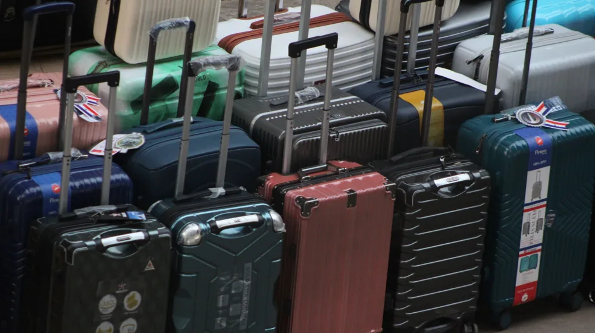

캐리어 구매 전 꼭 확인! 당신의 여행을 망치지 않을 5가지 선택 기준
사진: Jake Ryan / Pexels (무료 이미지, 출처 표기)
여행의 시작, 캐리어 선택에 실패하지 않는 법

여행의 설렘을 안고 짐을 꾸릴 때, 가장 먼저 마주하는 고민 중 하나가 바로 캐리어 선택입니다. 잘못 고른 캐리어는 무거운 짐처럼 여행 내내 불편함과 피로를 안겨줄 수 있죠. 며칠 간의 짧은 출장부터 한 달 살기 장기 여행까지, 당신의 여행 스타일에 꼭 맞는 캐리어를 현명하게 고를 수 있도록 핵심 선택 기준을 알려드립니다.
나에게 맞는 캐리어 사이즈, 이렇게 선택하세요
캐리어 사이즈는 여행 기간과 목적에 따라 달라져야 합니다. 항공사마다 기내 반입 및 수하물 규정이 다르므로, 사전에 확인하는 것이 중요합니다.
- 기내용 (20인치 이하): 보통 1~3일 단거리 여행이나 비즈니스 출장에 적합합니다. 항공기 기내에 직접 들고 탈 수 있어 수하물 대기 시간을 절약할 수 있습니다. 대부분 항공사의 기내 반입 규격은 '가로+세로+높이의 합 115cm 이내'입니다.
- 화물용 (24~28인치): 3~7일 정도의 일반적인 해외여행에 가장 보편적으로 사용됩니다. 위탁 수하물로 부쳐야 하며, 24인치는 짐이 많지 않은 1인에게, 28인치는 짐이 많은 1인이나 2인에게 적합합니다.
- 대형 (30인치 이상): 7일 이상의 장기 여행이나 가족 여행처럼 짐의 양이 많을 때 선택합니다. 대형 캐리어는 무게 초과 요금이 발생하기 쉬우므로, 짐 무게를 미리 확인하는 것이 중요합니다.
항공사 수하물 규정은 2024년 6월 기준으로 변동될 수 있으므로, 이용할 항공사의 공식 홈페이지에서 최신 정보를 확인하시길 권장합니다.
하드 vs 소프트, 캐리어 소재별 장단점 비교
캐리어 소재는 크게 외부 충격에 강한 하드 케이스와 가벼운 소프트 케이스로 나뉩니다. 각 소재의 장단점을 이해하면 자신에게 맞는 선택을 할 수 있습니다.
최근에는 두 소재의 장점을 결합한 하이브리드 캐리어도 출시되고 있어, 다양한 선택지가 존재합니다.
이동의 편안함을 좌우하는 바퀴와 핸들
캐리어 이동 시 편안함을 결정하는 핵심 요소는 바퀴와 핸들입니다. 공항이나 호텔, 거리에서 캐리어를 쉽게 끌고 다닐 수 있는지 확인해야 합니다.
- 바퀴: 360도 회전이 가능한 더블 휠(8바퀴)을 추천합니다. 싱글 휠(4바퀴)보다 안정적이고 이동이 부드러워 좁은 공간에서도 편리하게 움직일 수 있습니다. 바퀴 소재로는 소음이 적고 내구성이 좋은 우레탄 소재가 선호됩니다.
- 핸들: 흔들림이 적고 견고한 알루미늄 소재의 핸들이 좋습니다. 높이 조절 단계가 다양하여 사용자의 키에 맞춰 조절할 수 있는지, 손에 잡히는 그립감이 편안한지 확인하세요. 무거운 짐을 실었을 때에도 쉽게 부러지지 않는 내구성이 중요합니다.
안전한 여행을 위한 잠금장치와 확장 기능
여행 중 소지품을 안전하게 보관하고, 필요에 따라 수납 공간을 늘릴 수 있는 기능도 중요합니다.
- 잠금장치: 미국을 여행할 계획이라면 TSA 락(Travel Sentry Approved Lock) 기능이 있는 캐리어를 선택하는 것이 좋습니다. TSA 락은 미국 교통안전국(TSA) 검사관이 마스터키로 캐리어를 열 수 있도록 하는 시스템으로, 잠금장치 파손 없이 수하물 검사가 가능합니다. 비밀번호 방식이나 지퍼를 결합하는 형태 등 다양한 방식이 있습니다.
- 확장 기능: 캐리어 외부에 지퍼가 추가되어 있어, 이 지퍼를 열면 캐리어의 폭이 넓어져 수납 공간이 증가하는 기능입니다. 여행 중 쇼핑을 많이 할 계획이거나, 돌아올 때 짐이 늘어날 것을 대비한다면 확장 기능이 있는 캐리어가 유용합니다.
캐리어 구매 전 체크리스트: 이것만은 꼭!
최종 구매 전, 아래 체크리스트를 활용하여 당신의 완벽한 캐리어를 찾아보세요.
- 내부 수납 공간: 내부 분리형 칸막이나 다양한 크기의 포켓이 있는지 확인합니다. 짐을 효율적으로 정리하는 데 도움이 됩니다.
- AS 정책: 제품 보증 기간 및 유상 수리 가능 여부를 미리 확인합니다. 바퀴나 핸들 등 소모품은 수리가 필요할 수 있습니다.
- 디자인 및 색상: 개인의 취향에 맞는 디자인을 선택하되, 공항에서 수많은 캐리어 사이에서 내 것을 쉽게 찾을 수 있는 독특한 색상이나 디자인을 고려하는 것도 좋습니다.
- 캐리어 자체 무게: 짐을 채우지 않은 캐리어 자체의 무게를 확인합니다. 항공사 위탁 수하물 무게 제한이 있기 때문에, 캐리어가 가벼울수록 더 많은 짐을 실을 수 있습니다.
이러한 요소들을 꼼꼼히 고려하여 후회 없는 캐리어를 선택하시길 바랍니다.
🔗 이 글도 함께 보면 좋아요: 초보부터 전문가까지, 성공적인 캠핑을 위한 필수 용품 추천과 선택 가이드
관련 추천 상품
여행용 캐리어, 기내용 캐리어, 대형 캐리어 관련 인기 상품 보러가기
이 포스팅은 쿠팡 파트너스 활동의 일환으로, 이에 따른 일정액의 수수료를 제공받습니다.